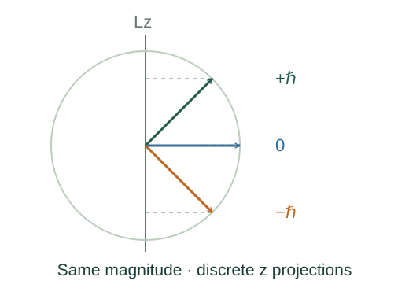

Derive angular-momentum eigenvalues and magnetic projections
Choose simultaneous eigenstates of J² and Jz. The commutator [Jz,J±] = ±ℏJ± means a ladder step changes projection by exactly .
What the symbols mean
ℓ: orbital angular-momentum index; mℓ: projection index; s = ½: electron spin input; J± = Jx ± iJy: ladder operators.
When this applies
Quantum angular-momentum commutators [Ji,Jj] = iℏεijkJk and normalized eigenstates. Orbital single-valuedness gives integer ℓ; intrinsic spin can be half-integer.
Developing the argument

Start from the angular-momentum algebra
Choose simultaneous eigenstates of J² and Jz. The commutator [Jz,J±] = ±ℏJ± means a ladder step changes projection by exactly .
Stop the upward ladder
At its highest state, J+ annihilates it. The identity J−J+ = J² − Jz² − ℏJz then fixes the squared-magnitude eigenvalue.
Stop the downward ladder
The corresponding lower endpoint is m = −j, and unit steps run to +j. For orbital wavefunctions, periodic azimuthal dependence requires integer m and integer ℓ.
Insert the gyromagnetic relation
The orbital moment is −e𝐋/(2m), so its magnitude and projections follow by substitution. The electron spin value s = ½ is a physical species input, not a consequence of orbital motion.
Restrict a hydrogen shell
For the Coulomb bound states the radial solution gives n = nr + ℓ + 1 with a nonnegative radial integer nr. Therefore a shell of principal index n permits ℓ from zero through n − 1.
A closer lookWhy does the radial solution impose this restriction? ↗A worked example
An ℓ = 1 orbital state has magnitude √2ℏ and possible z projections −, 0 and +.
Derivation behind this calculation ↗A point to keep straight
The Bohr-orbit rule L = nℏ is a historical model postulate, not the modern orbital-angular-momentum spectrum.
Check the assumptions and derivation ↗